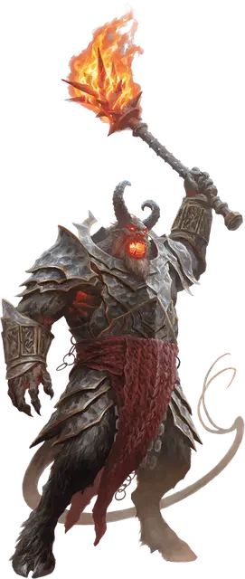

Огненный геллион
Fire Hellion
Огромное Исчадие (Дьявол), обычно законно-злое

Класс Доспеха 18 (латы)
Хиты 175 (14к12 + 84)
Скорость 30 футов
| мод | спас | ||
|---|---|---|---|
| СИЛ | 25 | +7 | +7 |
| ЛОВ | 10 | +0 | +0 |
| ТЕЛ | 23 | +6 | +6 |
| мод | спас | ||
|---|---|---|---|
| ИНТ | 16 | +3 | +3 |
| МДР | 14 | +2 | +6 |
| ХАР | 21 | +5 | +9 |
Иммунитет к урону огонь
Иммунитет к состояниям испуг, очарование
Чувства тёмное зрение 120 футов, пассивное Восприятие 16
Языки Общий, Великаний, Инфернальный
Опасность 11 (7200 опыта)
Бонус мастерства +4
Особенности
Сопротивление магии. Огненный геллион совершает с преимуществом спасброски от заклинаний и прочих магических эффектов.
Забирающий души. Великан или Гуманоид, чьи хиты геллион уменьшил до 0, умирает, а его душа восстает в виде лемура [lemure] на Авернусе, одном из девяти кругов Ада, через 1к4 часа. Если существо не будет воскрешено до этого времени, его можно вернуть к жизни только с помощью заклинания исполнение желаний [wish] или убив лемура и наложив истинное воскрешение [true resurrection] на первоначальное тело существа.
Действия
Мультитака. Геллион совершает две атаки Моргенштерном.
Моргенштерн. . Рукопашная атака оружием: +11 к попаданию, досягаемость 10 футов, одна цель. Попадание: 20 (3к8 + 7) колющего урона плюс 11 (2к10) урона огнём. Если целью является существо, оно не сможет восстанавливать хиты до начала следующего хода геллиона.
Адская сфера. Геллион метает волшебный огненный шар, который взрывается сферой радиусом 20 футов с центром в точке, которую хеллион может видеть на расстоянии 120 футов. Сфера огибает углы. Каждое существо в этой области должно совершить спасбросок Ловкости Сл 17. В случае провала существо получает 18 (4к8) урона огнём и 18 (4к8) урона некротической энергией или половину этого урона в случае успеха.
Описание
На мой взгляд, огненный гелион прекрасно иллюстрирует разницу между природным огнем и искаженным пламенем Девяти Преисподней..
- Бигби
Огненные великаны изучают войну во многих её формах по всей мультивселенной, что иногда приводит великанов к увлечению войной Крови — бесконечным конфликтом между демонами и дьяволами на Нижних планах. Такой великан мог бы заключить договор с могущественным дьяволом, надеясь изучить тактику, которую дьяволы отрабатывали тысячелетиями, и приобрести магические дары, которые помогли бы великану подняться в иерархии.
Со временем великан развращается, сам по себе становясь Исчадием преисподней. Дьявол учит великана ковать из адского железа и адского пламени, позволяя великану создавать оружие, способное направлять души убитых в Авернус, первый слой Девяти кругов Преисподних. Таким образом, дьявол получает постоянный приток душ от врагов великана, а также обещание, что великан будет служить дьяволу кузнецом в Девяти Преисподних после смерти.
Развращённый великан приобретает дьявольские черты, включая рога, раздвоенные копыта вместо ног и раздвоенный хвост.